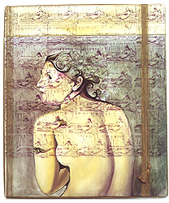

|  |  |  |  |  |
|
 click here to view larger image |
 |
Cover oil paint, 2 cotton canvases, twine, linoleum prints, temporary tattoos 80 x 96 cm 2000 collection Lila and Dietert Lundquist-Bleys At first I simply wanted to update the classic nude by adding a tattoo. I wanted to do a 'cover' like in music where a modern band covers an old song. So I chose a beautiful Ingres painting to use as a starting point. But the 'cover' concept kept evolving as I worked. |
|
As an art student I was always curious about the number of female nudes sprinkled throughout art history, museums, etc. They're beautiful, but there are so many that at a certain point, the lack of of originality just isn't interesting anymore. At times I've called this painting, 'Art History Thoroughly Covers the Female Nude.'
The tatoo gave off this feeling of permanence and of being branded. In the spirit of the tattoo, I wanted to 'make a lasting impression' upon her. With this in mind, I picked out another Ingres to use as reference for carving out a linoleum print, the repetitious print representing the never-ending series of female nudes in art history. Then there is also the idea of the 'covered woman,' women who are required to exist behind cloth. In my painting, I liked the idea of having a nude sitting behind a curtain made of nudes. |
{kind=link}